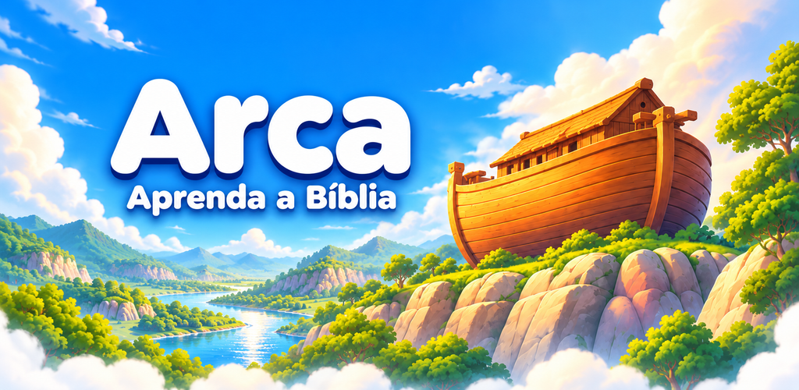
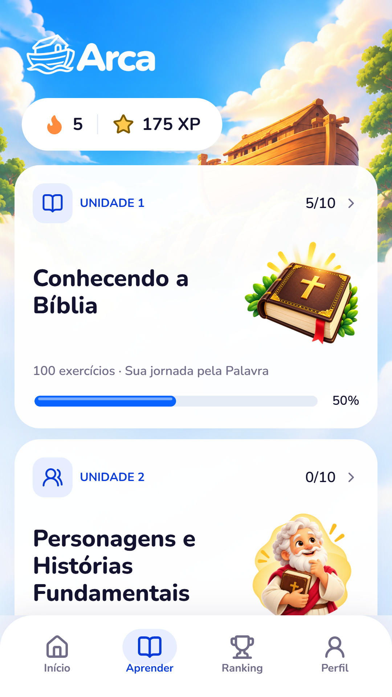
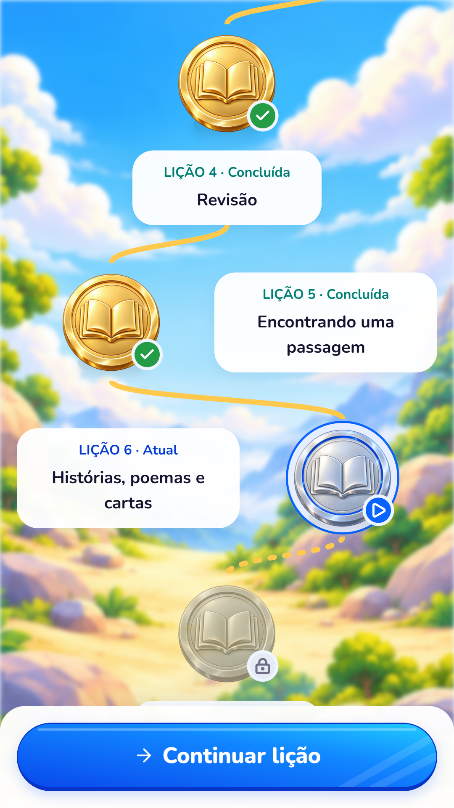
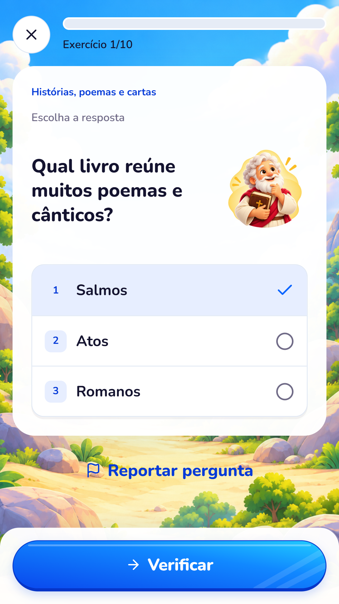
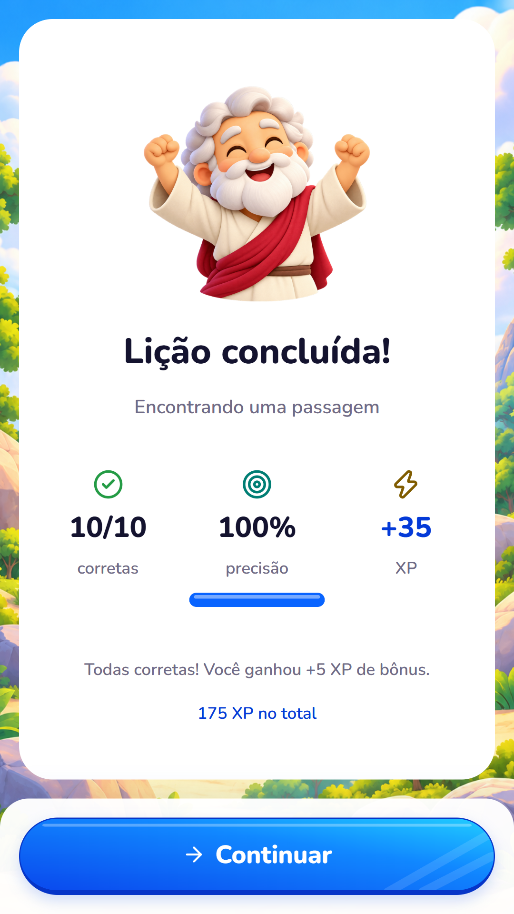
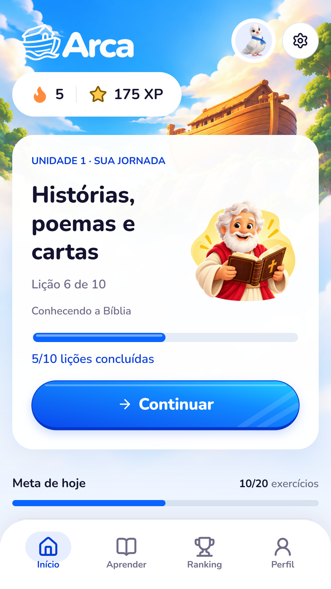
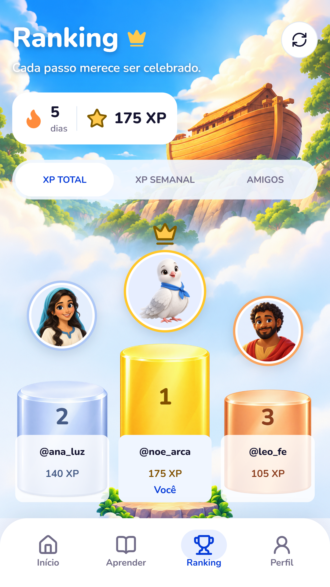
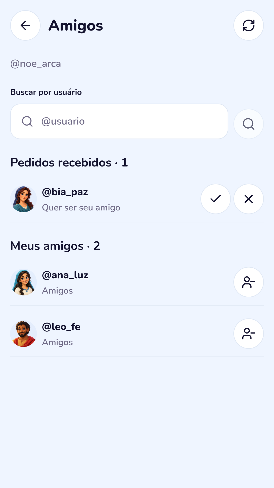
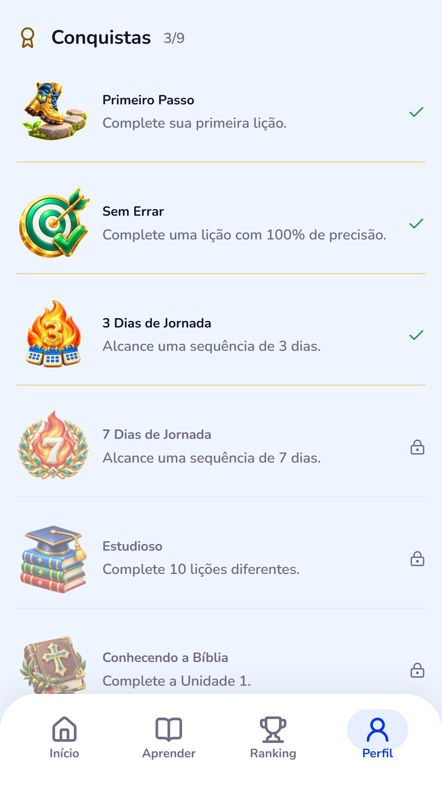

Materiais da Play Store · Português do Brasil · 15/10/2026Capturas da prévia web de produção, com contas de demonstração. Conferir com o Android instalado antes de publicar.

Descrição completa · Novidades · Textos alternativos







